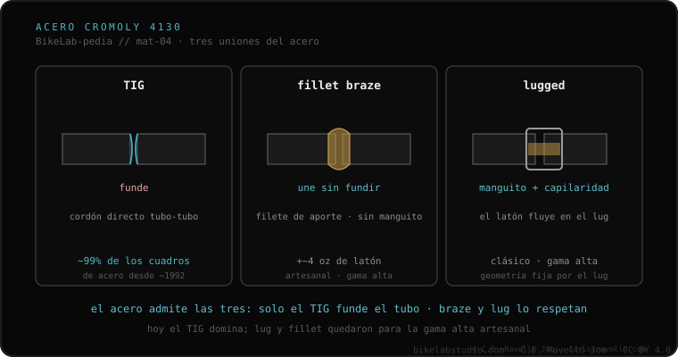

El acero es el material más versátil de unir, y tiene tres caminos documentados. El TIG funde los propios tubos para fusionarlos (en acero, por encima de ~1450 °C). El fillet brazing los une con un aporte de bronce o plata que funde a menor temperatura, sin fundir el tubo. El lugged usa un manguito (lug) en la unión, con el aporte entrando por capilaridad. En la práctica, cerca del 99 % de los cuadros de acero fabricados desde ~1992 son TIG.
Si tu cuadro es de acero, tienes el material más agradecido de los cuatro. Pero "agradecido" no es "cualquiera lo suelda": el truco está en quién toca la pared fina.
El TIG funde el propio metal de los tubos para fusionarlos; en acero eso ocurre por encima de unos 1450 °C. Es rápido, robusto y barato de producir, y por eso domina la fabricación moderna. El fillet brazing juega distinto: no funde el tubo, sino que lo une con un aporte de bronce o plata que funde a menor temperatura. Altera menos la estructura del tubo, deja una transición lisa y limable, pero pesa algo más y es más lento y costoso.
El lugged es la tercera vía: usa un manguito (lug) que envuelve la unión, y el aporte entra por capilaridad entre el lug y el tubo. Es la estética clásica del cuadro de acero artesanal. En la práctica, cerca del 99 % de los cuadros de acero fabricados desde ~1992 son TIG; el lug y el fillet quedan para la gama alta y la construcción artesanal.

Esta es la entrada al material más versátil del clúster. Encaja directamente con la diferencia entre fundir el tubo o unirlo sin fundirlo (TIG y brazing), con el modo en que cada material acumula o no daño con el uso —la fatiga por material— y con las preguntas que conviene hacerle al soldador antes de dejarle el cuadro. Saber cuál de los tres caminos lleva tu cuadro es lo primero que cambia la conversación.
Si dudas de la técnica, del tubo o del estado de una unión, mándanos el caso. Diagnóstico real, sin venderte nada. Escríbenos por WhatsApp
Tres caminos documentados. El TIG funde los propios tubos para fusionarlos (por encima de ~1450 °C en acero). El fillet brazing los une con un aporte de bronce o plata que funde a menor temperatura, sin fundir el tubo. El lugged usa un manguito (lug) en la unión, con el aporte entrando por capilaridad.
En la práctica, cerca del 99 % de los cuadros de acero fabricados desde ~1992 son TIG. El lug y el fillet quedan para la gama alta y la construcción artesanal: alteran menos la estructura, pero pesan algo más y son más lentos y costosos.
Que sea el más fácil de unir no significa que cualquier herrero sirva. Si el cuadro es de tubería fina de marca o lleva racores, el exceso de calor de quien suelda vigas quema la pared delgada o derrite la unión de bronce contigua.